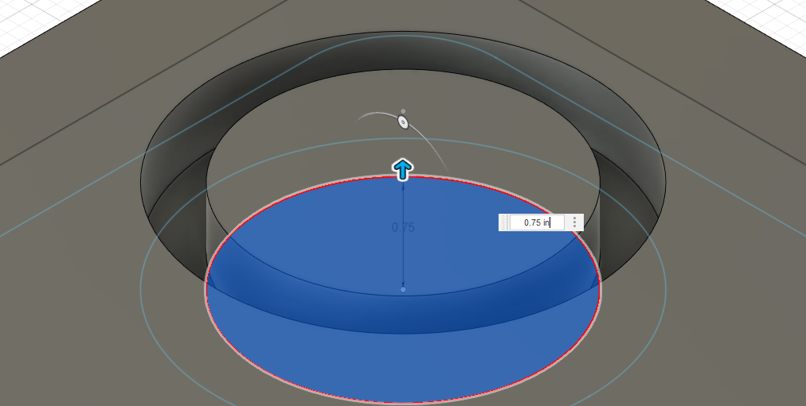
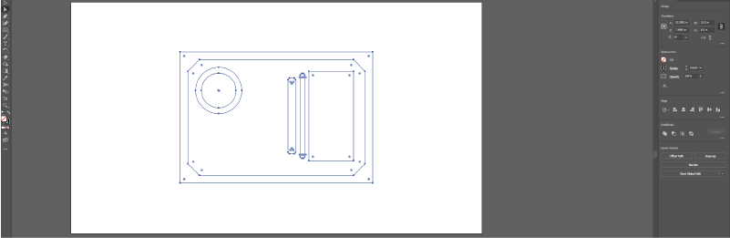
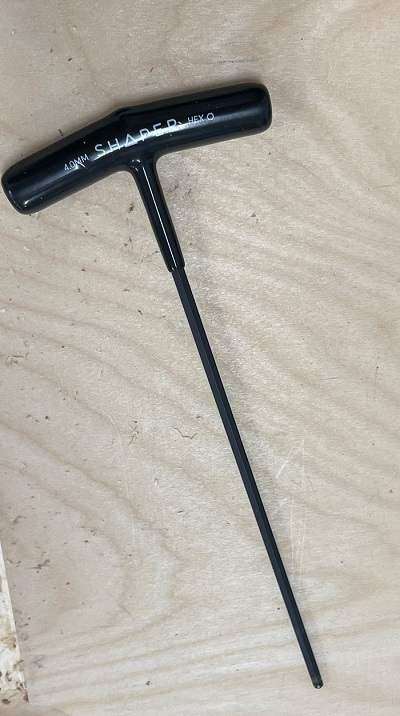
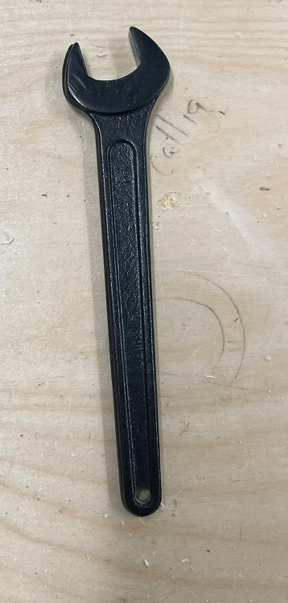
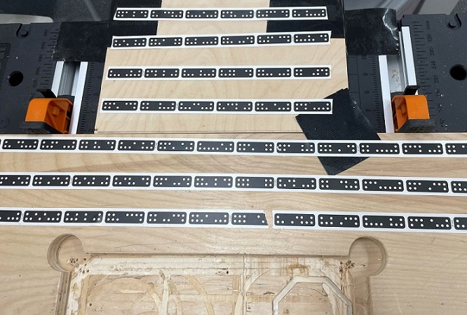

CNC Routing
Welcome to week two of Digital Fabrication!!!
This week we'll be using the Shaper device alongside Fusion 360 and Adobe Illustrator.
These tools will allow us to cut and carve wood materials into a personalized item organizer.
Before we begin, let's go over how to set up and design our object.
To start, I opened up Fusion 360. It should open to a page similar to the one above.

Before starting, make sure the measurements are in inches.
This setting is under the "Document Settings" tab.

From there, go to Create → Create Sketch.
This mode allows us to create two-dimensional shapes, which we can then turn into three-dimensional objects.
Select the x-y plane and create an 8.5in x 12.5in two-point rectangle.
This outline will represent the surface area of the stock wood material.
After tracing the stock outline, we will make a profile cut.
This cut will determine the dimensions of the final product.

Leave at least a half-inch between the perimeters of the stock and the organizer itself.
I added a fillet to the edge of the profile cut at this point in the sketch.
From here, we can design the features of the item organizer.
I added a circle with a 3-inch diameter and another 2.25-inch one inside of the first circle.
We will cut the in-between area to create a cupholder.
Then, I added a compartment to hold my phone.
I measured out a 5.8in x 2.9in rectangle with room to slide my phone in and out.
After that, I added a 5.5in x 0.3in rectangle near the phone compartment.
The compartment is large enough to fit sharpie pens or certain highlighters.
I chose to fillet the corners of this rectangle.
Finally, I measured out a 4.9in x 0.5in rectangle with smooth corners.
I made the rectangle large enough to hold a sharpened pencil on hand when measuring out the sketch.
I would have measured a brand new, unsharpened pencil in hind's sight when creating this compartment.
With the sketch of the item organizer completed, I clicked "Finish Sketch."
From this point, we can start extruding the individual components to create a render of the final product.
I extruded the sketch's outline and the interior area to 0.75 inches.
These extrusions allow the render to match the wood we will be cutting.
Then, I did the same with the base of each compartment, but only by 0.25in.
The result is pockets deep enough to hold items.

I did, however, extrude the inner circle to 0.75 inches so that it would be at surface height with the majority of the board.
This component will be used in next week's project, as it will hold a printed pot.
With the render done, we will export our design to Adobe Illustrator.
Through Illustrator, we can designate which cuts will apply to different sections of the board.

Export the file as a .DXF and convert it to a .AI file (you can do this for free online).
Open the .AI file in Illustrator and make sure to scale the proportions to the measurements of the wood stock.
Delete the outer outline since the stock wood is already pre-cut to that shape.

Using this illustration, we can determine the types of cuts used on the Shaper.
I colored the circle black to create an exterior cut.
Then, I filled the compartments gray to make them pocketed.
Lastly, I added a gray text with my last name.
Don't make the same mistake I made on my first go:
Make sure to turn the text into a vector; otherwise, the Shaper will not detect the text!
Finally, save the file as an .SVG file and transfer it to a Shaper-compatible storage device.
Now, we will move the file over to the Shaper.

Before starting, I received training for the Shaper device.
Please make sure to follow the safety precautions (found in the Fiber Lab).
I prepared myself with all the necessary safety equipment and vacuumed the workspace.
Then, I picked up the wood stock and put double-sided tape on it.
I also screwed down the wood stock to the table so that it would not move during cutting.

This organizer incorporates two types of cuts, meaning we will be using two endmills.
To switch endmills, utilize this tool on the drill to detach it.
(You should turn off/unplug the Shaper when doing this step)

Unscrew the endmill with a wrench (if the wrong endmill is attached).
Then, insert the desired endmill about 2/3rds of the way into the drill.
Finally, reattach the drill and insert the USB into the Shaper.

The next step is to scan the surface of the cutting area.
Make sure to scan the tape during this step thoroughly.
At this point, I imported my design to the Shaper interface and placed it within the wood stock.
I calibrated the endmill using the z-touch featured and turned on the vacuum for cutting.
With all of the preparations complete, it's time to start cutting.
I ordered the cuts by which endmill I used, starting with pocket cuts.
For each cut, I made sure to adjust the settings to match the dimensions of my sketch.
I selected each element and pressed the turquoise cut button.
Then, I moved the Shaper along the cutting path.
I switched endmills and finished my exterior cuts.
With all of that done, I detached my organizer and sanded it off.
I did, however, make several mistakes with my first attempt.
For example, I used the wrong endmill on several of my cuts.
Luckily, I was able to do a much more successful second run.
Here is how my project turned out.